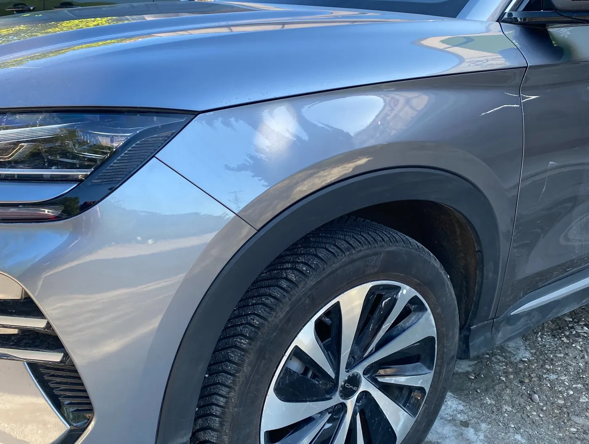
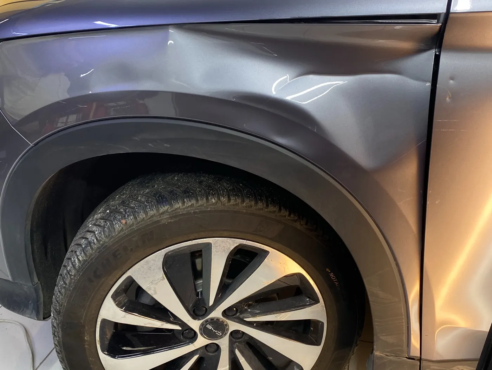

Boyasız Göçük Düzeltme
Macun ve boya kullanmadan, göçüğü panelin arkasından iterek ya da yüzeyden çekerek düzeltiyoruz.
Göçük Sepeti Antalya Yetkili Bayi
Park göçüğüDolu hasarıKapı vuruğuÇamurluk ezilmesiTavan göçüğü boyasız, macunsuz düzeltiyoruz.
Aracınızın orijinal boyasını koruyarak, 3D ışık sistemiyle milimetrik onarım. Ekspertizde boya çıkmaz, aracınız değer kaybetmez.
★★★★★Hizmetlerimiz
Boyası kalkmamış hemen her göçüğü, özel PDR aletleri ve 3D ışık sistemiyle aracın orijinal formuna geri getiriyoruz.
Macun ve boya kullanmadan, göçüğü panelin arkasından iterek ya da yüzeyden çekerek düzeltiyoruz.
Kaput, tavan ve bagajdaki yüzlerce dolu izini tek tek, boya değişimi olmadan gideriyoruz.
Otoparkta kapı vuruğu, sürtme ya da bariyer kaynaklı göçükleri çoğu zaman aynı gün teslim ediyoruz.
"Değişmeli" denen çamurluk ve kapıları, mümkün olduğunda parça sökmeden ve değiştirmeden kurtarıyoruz.
Yeni nesil ve elektrikli araçların alüminyum kaportasına özel ekipmanla güvenli onarım.
Onarım sonrası pasta cila ile çizik ve matlıkları giderip aracınızı ilk günkü parlaklığına kavuşturuyoruz.
Önce / Sonra
Kaydırıcıyı sağa sola çekin. Hiçbir panel boyanmadı.


Ön çamurlukta derin göçük. Parça değişimi ve boya yapılmadan, boyasız onarım yöntemiyle orijinal formuna getirildi.
Neden boyasız onarım?
Klasik kaporta-boya işleminde macun ve boya kullanılır; ekspertiz raporunda "boyalı" ya da "lokal boyalı" olarak görünür ve satışta ciddi değer kaybına yol açar. Boyasız onarımda ise aracınızın fabrika boyasına dokunulmaz.
Ücretsiz değerlendirme alınNasıl çalışıyoruz?
Göçüğün fotoğrafını WhatsApp'tan iletin. Farklı açılardan 2–3 kare yeterli.
Uzmanımız hasarı inceler, yöntemi ve yaklaşık fiyatı hemen bildirir.
Randevu gününde 3D PDR ışık sistemi altında göçük milimetrik olarak düzeltilir.
Işık altında birlikte kontrol eder, aracınızı ilk günkü haliyle teslim ederiz.
Atölyeden canlı
Videoya dokunarak sesi açabilirsiniz. Daha fazlası Instagram'da.
Müşteri yorumları
Sıkça sorulanlar
Başka bir sorunuz mu var? WhatsApp'tan yazın, hemen dönelim.
Boyasız göçük düzeltme (PDR – Paintless Dent Repair), göçüğün özel aletlerle panelin arkasından itilerek ya da yüzeyden çekilerek, macun ve boya kullanılmadan eski formuna getirilmesidir. Aracın fabrika boyası korunur.
Hayır. Boya ve macun kullanılmadığı için boya kalınlık ölçümünde değişiklik olmaz; aracınız ekspertizde orijinal boya olarak görünür.
Küçük park göçükleri genellikle aynı gün, çoğu zaman birkaç saat içinde teslim edilir. Dolu hasarı veya geniş hasarlarda süre, hasarın boyutuna göre birkaç gün olabilir.
Göçüğün fotoğrafını WhatsApp'tan 0531 611 87 97 numarasına gönderin; ücretsiz ön değerlendirme ile yaklaşık fiyatı hemen iletelim.
Boyası çatlamamış veya kalkmamış göçüklerin büyük bölümü boyasız düzeltilebilir. Boyada kırılma varsa en doğru yöntemi ücretsiz değerlendirmede birlikte belirleriz.
Çoğu küçük ve orta hasarda gerekmez. Boyasız onarım, kaskoyu bozmadan uygun maliyetle aracınızı eski haline getirmenin en pratik yoludur.
Elbette. Denizli, Isparta, Burdur ve çevre illerden randevuyla gelen müşterilerimiz var. Önceden fotoğraf gönderirseniz yolculuğunuzu boşa çıkarmayacak net bir değerlendirme yaparız.
İletişim & Konum
Çalışma saatleri
| Pazartesi | 08:00 – 19:00 |
| Salı | 08:00 – 19:00 |
| Çarşamba | 08:00 – 19:00 |
| Perşembe | 08:00 – 19:00 |
| Cuma | 08:00 – 19:00 |
| Cumartesi | 08:00 – 19:00 |
| Pazar | Kapalı |